Dhan Drishti
Academic design-futures study · 3 weeks · Secondary research and Google NotebookLM
Overview
Visual description
A farmer stands in a cracked field. The film moves to an illuminated cultivation tower, suspended roots receiving mist, and a close view of rice. These images illustrate an imagined future; they do not demonstrate crop performance.
What the study produced
Four future scenarios, four speculative cultivation systems, and an imagined farmer journey.
Key insight
Resource efficiency is one consideration. Access, local support and farmer control also affect how a system could be used.
Why it matters
The scenarios and concepts connect environmental pressures with changes in farming work and decision-making.
Academic speculative-design study based on secondary research. Images and films are AI-generated illustrations; the concepts and journeys describe imagined futures.
Course: Forecasting Design Technology · MIT Institute of Design · 23UXD5011.
Design question
Changes in cultivation can introduce new work, skills and support needs.
The research examines water availability, physical strain, labour changes and agricultural technology. Alternative systems could reduce some demands while introducing equipment costs, maintenance and dependence on technical support.
How might rice farming become more sustainable while keeping farmers able to understand and influence it?
The study considers how cultivation changes affect farmers and the systems around them.
The historical review establishes the context for examining future change.
Research approach
This three-week course project used secondary research as its assigned method. Research papers, institutional reports, historical material, and digitally available agricultural data supplied the starting point. Google NotebookLM was used as a research aid.
The study moved from weak signals to STEEP, driver mapping, uncertainty and scenarios. This presentation follows the report's sequence; the links between stages and concept questions are an editorial synthesis.
Water
What limits cultivation?
Work
What changes for the farmer?
Agency
Who can understand and decide?
Source: report sections 1.6 to 1.7 and 3.1 to 3.6. Original report
Historical context
The historical review examines four eras through social, technological, economic, environmental and political change. It identifies how water management, labour and institutions shaped cultivation.
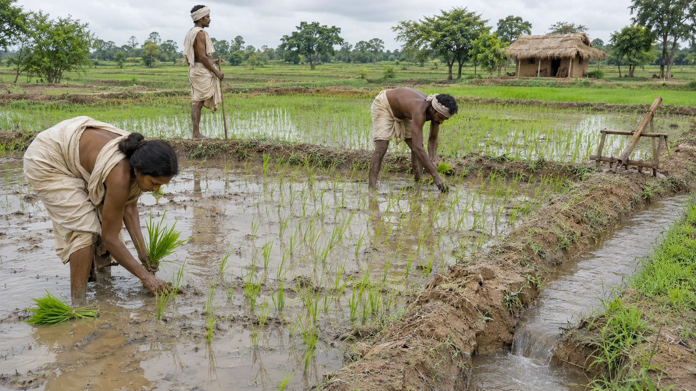
Adaptive systems
Ancient agrarian practices
Cultivation followed seasonal water, local knowledge, and shared human work.
Five factors in this period
- Social
- Communal work and knowledge passed between generations.
- Technology
- Local tools, seed selection, and cultivation practices.
- Economy
- Agrarian subsistence, exchange, and regional grain systems.
- Environment
- Seasonal water and ecological conditions shaped cultivation.
- Institutions
- Local and regional arrangements organised land and resources.
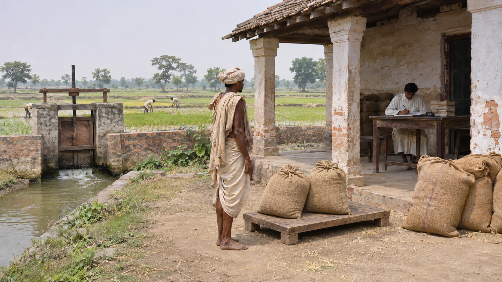
Extractive systems
Colonial transformation
Canals and land-revenue arrangements changed what cultivation served and who controlled it.
Five factors in this period
- Social
- Land relationships and rural livelihoods changed under unequal control.
- Technology
- Canal and irrigation infrastructure expanded control of water.
- Economy
- Taxation and export-oriented commercial production shaped incentives.
- Environment
- The report connects this reorganisation with ecological disruption.
- Institutions
- Colonial administration influenced land and cultivation.
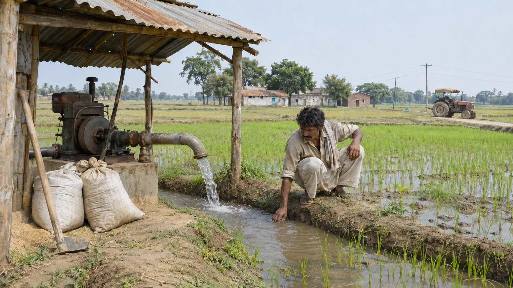
Intensive systems
Green Revolution
New varieties, irrigation, and purchased inputs increased the role of infrastructure and institutions.
Five factors in this period
- Social
- Farming work changed, while benefits and input burdens were uneven.
- Technology
- High-yielding varieties, mechanisation, fertilisers, and pesticides.
- Economy
- Investment, credit, and recurring input costs became important.
- Environment
- The report connects intensification with groundwater dependence, chemical inputs, and ecological trade-offs.
- Institutions
- Public support, procurement, and subsidies shaped adoption.
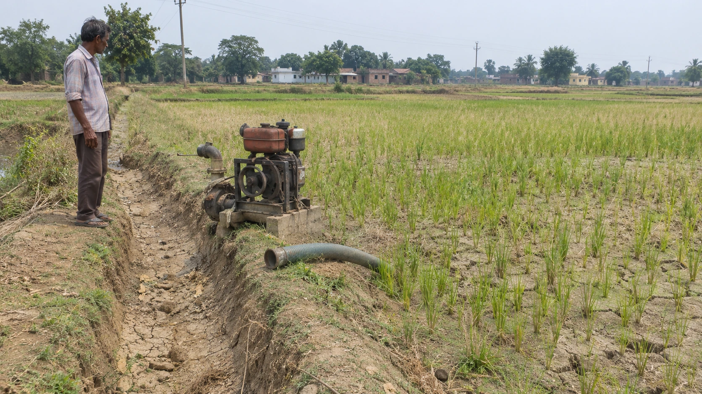
Stressed systems
Contemporary pressures
Water, climate, costs, labour, and digital services now interact in the same farming system.
Five factors in this period
- Social
- Migration, aspirations, changing roles, skills, and uneven access affect continuity.
- Technology
- Precision tools and digital services create new possibilities.
- Economy
- Costs, income uncertainty, and unequal service access shape choices.
- Environment
- The report highlights groundwater depletion, methane from flooded paddy, and climate variability.
- Institutions
- Policy and digital governance influence adoption and support.
The traditional cultivation baseline
- Prepare the land
- Raise seedlings
- Transplant
- Manage irrigation
- Weed
- Apply nutrients
- Manage pests
- Harvest
- Thresh
- Dry and store
The review identifies recurring changes in water control, labour, technology and institutions.
The next stage examines current signals that could change these relationships.
Source: report sections 1.1 to 1.4 and 2.1. Original report
Weak signals
Satellite crop monitoring
Satellite imagery supports crop monitoring.
Who can interpret the information and use it?
AI-assisted yield forecasts
Yield forecasts could inform cultivation and harvest planning.
Which decisions should it inform?
Drone scouting
Drone monitoring and targeted interventions could be provided as services.
Who operates and maintains them?
Alternate wetting and drying (AWD)
Field water can be managed differently; the report also considers possible carbon incentives.
What helps a farmer judge changing conditions?
Soil and environmental sensing
Regular measurements could support ongoing decisions.
How can measurements become useful guidance?
SRI and direct seeding
The scan considers cultivation practices as well as devices. SRI means System of Rice Intensification.
Which cultivation assumptions can be reconsidered?
Data-to-action process
From data to action
- Observe
- Satellites, drones, and field sensors supply information.
- Interpret
- Analytics and forecasts help interpret the observations.
- Act
- Guidance, irrigation, and precise input use affect cultivation.
- Check again
- Further observations create a feedback loop.
The scan points toward data-supported cultivation, connected services and a growing need for system management.
STEEP groups the implications of these signals into wider forces.
Source: report sections 2.2 to 2.4. Original report
STEEP analysis
STEEP groups the signals into Social, Technological, Economic, Environmental and Political forces. The report assigns a qualitative impact of “very high” to the environmental force and “high” to the other four.
Social
Migration, changing aspirations and workforce roles, and uneven access to skills.
Design question
How would the work change, and what support would people need?
Report impact: high
Technological
Precision tools, sensors, automation and predictive support.
Design question
What assistance could technology provide, and what new dependencies would it introduce?
Report impact: high
Economic
Cost efficiency, income stability and possible new revenue sources.
Design question
Who could afford installation and continuing operation?
Report impact: high
Environmental
Groundwater depletion, paddy methane, and climate pressure.
Design question
What could change if continuous flooding were no longer assumed?
Report impact: very high
Political
Pricing, subsidies, insurance, institutional support, and training.
Design question
How could policy and support affect farmers' participation?
Report impact: high
Water emerges as a central pressure, connected to work, costs, access and policy.
Driver mapping then examines how these forces interact.
Source: report sections 2.5 and 3.2. Original report
Driver mapping
Driver mapping examines how the forces identified through STEEP interact. The report uses a PESTEL-based approach (Political, Economic, Social, Technological, Environmental and Legal) to consider impact, influence on farmers and relationships between seven drivers.
- Labour shortage
- Rising input costs
- Water stress and climate variability
- Technological advancement
- Policy and institutional support
- Market and income pressure
- Digital literacy and trust
The driver map connects technology with costs, skills, trust, policy and income.
Impact and uncertainty mapping identifies relationships that could lead to different futures.
Source: report sections 3.3 and 4.1. Original report
Key uncertainties
The uncertainty analysis identifies three tensions whose outcomes could lead to different farming scenarios.
- Adoption ↔ accessibility
- Tools may spread while access to skills and support stays uneven.
- Sustainability ↔ economic viability
- Resource savings may introduce investment and maintenance demands.
- Policy control ↔ farmer autonomy
- Institutions and platforms can enable farming while shaping its decisions.
The three tensions provide questions about access, economic viability and farmer control.
The futures cone helps organise the alternatives explored in the scenarios.
Source: report section 3.4. Original report
Futures and scenarios
The futures cone organises possible, plausible and probable futures as nested categories. A preferred future reflects a value choice across them. The report develops four narratives within this framework. Method reference: Voros.
Nested regions narrow from possible to plausible to probable. The dotted path represents a preferred direction.
- Possible
- Broader conceivable futures.
- Plausible
- Alternatives consistent with current understanding.
- Probable
- What appears likely from current tendencies.
- Preferred
- A value choice about what should happen, crossing the categories.
- Wildcards
- Disruptions that can alter several trajectories.
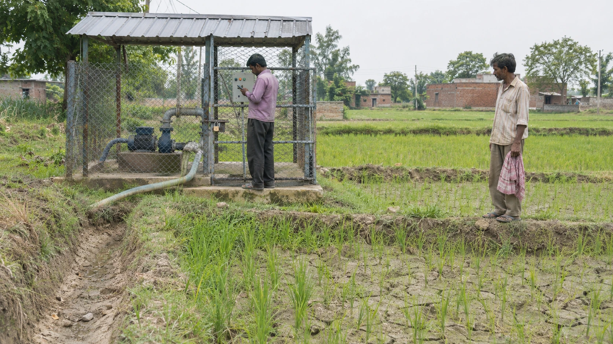
Probable
Adoption through intermediaries
- What changes
- Farmers adopt under pressure, often through intermediaries.
- Farmer's role
- Service providers interpret information and influence action.
- Trade-off
- Tools become available without automatically transferring control.
Scenario conditions
- Pressures: labour shortage, rising costs, water stress, climate uncertainty, and volatile markets.
- Barriers: confidence and literacy, connectivity, trust, credit dependence, and limited time or support.
- The scenario anticipates continued vulnerability even with technology present.
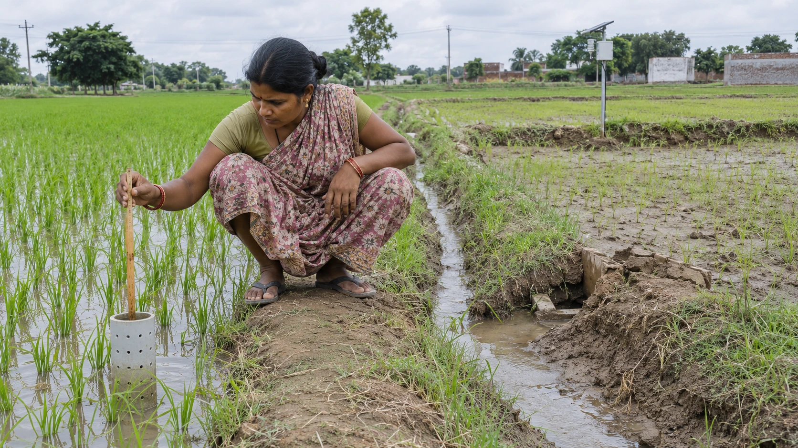
Plausible
Uneven access to efficiency gains
- What changes
- Sensors, advice, and better-managed inputs support some farms.
- Farmer's role
- Connected farmers can use data, but others lack support or access.
- Trade-off
- Benefits depend on capability and inclusion, not technology alone.
Scenario conditions
- Enablers: sensors, advisory services, efficient irrigation, input decisions, and possible sustainability incentives.
- Feedback: data → interpretation → decisions → actions → further observation.
- Barriers: upfront cost, connectivity, digital skills, and trust. Better outcomes are conditional.
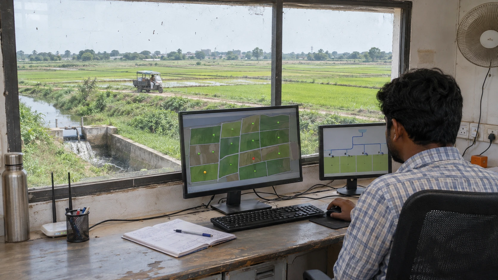
Possible
Platform-managed farming
- What changes
- Platforms coordinate data, decisions, execution, and market access.
- Farmer's role
- Individual plots operate within externally managed arrangements.
- Trade-off
- More predictable support or income could accompany reduced independence.
Scenario conditions
- Proposed chain: collect data → decide → execute → coordinate production → pay under contract terms.
- Potential gains: access to advanced inputs and more stable arrangements.
- Potential losses: discretion, independence, and connection with farming identity.
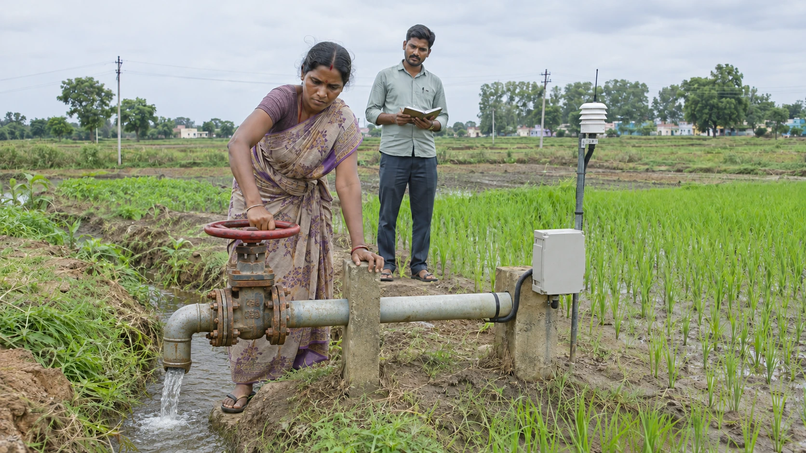
Preferred
Farmer-led use of technology
- What changes
- Understandable tools operate within local support and fair institutions.
- Farmer's role
- Farmers can participate in and influence the systems they use.
- Trade-off
- This future depends on services and governance as much as devices.
Scenario conditions
- Tools: simple, trustworthy, context-specific, and usable across local languages and literacy levels.
- Support: village entrepreneurs, agricultural advisors, and cooperatives.
- Conditions: fair pricing, transparent insurance, and accessible training. Stability and reduced risk are intended outcomes.
Disruptive scenarios
The report also considers events and alternative arrangements that could disrupt the scenarios.
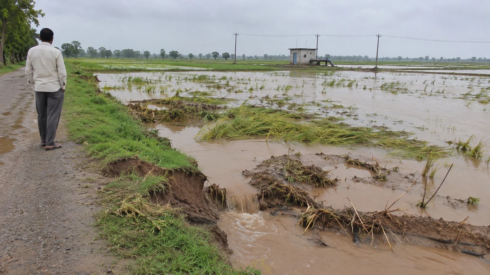
Climate shock
Extreme weather could undermine cultivation and force changes of crop or livelihood.
What can adapt when the current cultivation system becomes impractical?
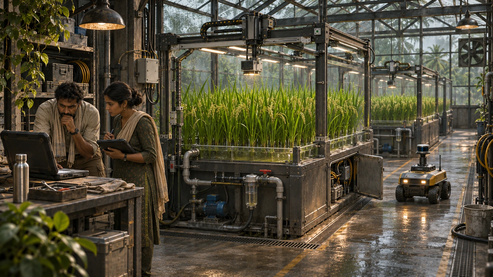
Automated micro-farms
A few skilled operators could coordinate multiple controlled growing units.
What happens to work, maintenance, and concentration of technical control?
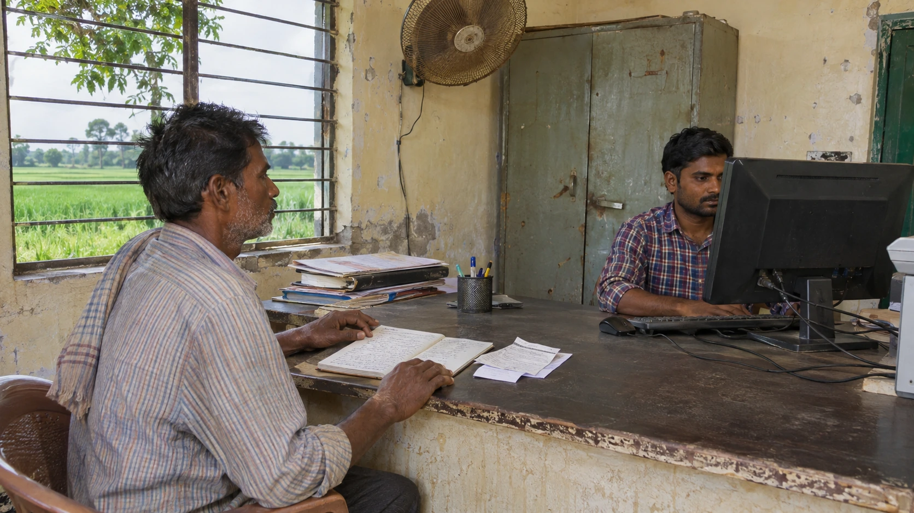
Data ownership and control
Farmers and platforms could disagree over the ownership, access, and control of farm records.
Who can retrieve, interpret, share, or withhold the information?

Community-owned technology
Collective ownership and management of equipment and technical capability could offer another path.
How are support, decisions, costs, and benefits shared?
Cross-cutting uncertainties: climate, technology adoption, policy, social trust, and economic shocks.
The scenarios compare who can use technology, who carries risk and who controls decisions.
The preferred scenario identifies four values for examining the concepts.
Source: report sections 3.5 to 3.6 and 4.2 to 4.6. Original report
Preferred values
The preferred scenario identifies four values: accessible tools, local support, fair institutions and farmer control.
Understandable and local
Suit local languages, literacy, and farming conditions.
Concept question
Could voice guidance or other accessible formats support understanding?
Human support
Village advisors, entrepreneurs and cooperatives provide local support in this scenario.
Concept question
What support is needed for installation, learning and maintenance?
Fair institutions
Pricing, transparent insurance, and training affect participation.
Concept question
How would costs and institutional arrangements affect access?
Farmer agency
Farmers retain a role in understanding and deciding how the system operates.
Concept question
What can the farmer understand, influence and decide?
The concepts are considered through understandable tools, local support, fair access and farmer control.
These values inform questions about the relationship between the farmer, crop and ecosystem.
Source: report section 4.5. Original report
Speculative design
Concept exploration connects water and land constraints with migration, bending and heavy physical work.
How can the relationship between the farmer, the crop, and the ecosystem be rethought?
- Starting assumptions: fields, flooding, and established labour patterns.
- Alternatives: move indoors, connect a nutrient loop, mist roots, or assist existing fields.
- Concept outputs: describe systems and illustrate a possible use experience.
- Trade-offs: examine new dependencies, skills, costs, and control.
The exploration produced four cultivation concepts and an imagined use sequence.
The following concepts show how each system changes cultivation, resources and the farmer's work.
Source: report sections 5.1 to 5.5 and 6.1 to 6.2. Original report
Four cultivation systems
The four concepts explore field assistance, controlled growing spaces, rice and fish integration and aeroponics.
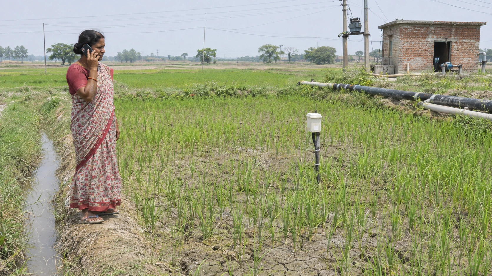
Assist the field
AI Smart Paddy
- Proposed change
- Retain open-field cultivation and add monitoring and guidance.
- How it works
- Sensors, drones, and voice guidance support decisions.
- Research basis
- Connects precision technology with literacy and access.
- Trade-off
- The original concept delegates detailed decisions to automation, while the preferred future retains farmer control. How advice is explained, accepted or challenged remains unresolved.
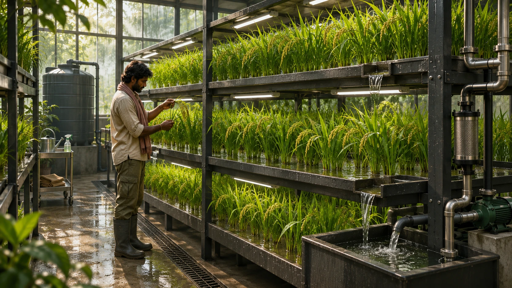
Move indoors
Vertical Paddy
- Proposed change
- Reorganise cultivation into controlled, stacked layers.
- How it works
- Rice-growing trays, climate control, and recirculation are proposed.
- Research basis
- Responds to land, water, and seasonal constraints.
- Trade-off
- Environmental control introduces infrastructure, energy, capital, and maintenance demands.
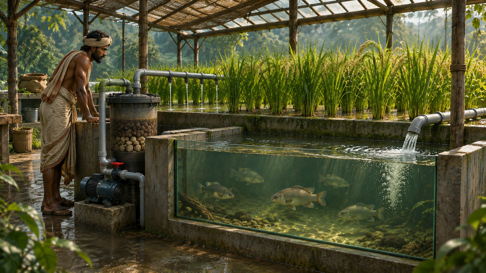
Connect the loop
Aqua Rice
- Proposed change
- Link rice cultivation with fish rather than separate production.
- How it works
- Nutrient-rich water from fish cultivation circulates through the proposed rice-growing system.
- Research basis
- Explores nutrient circulation and the production of both rice and fish.
- Trade-off
- The concept raises questions about nutrient balance, crop performance, fish welfare and how faults could affect the connected system.
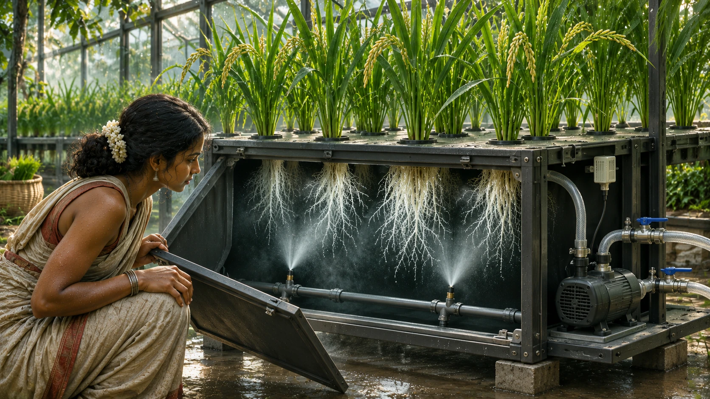
Rethink the root
Dhan Drishti
- Proposed change
- Replace a flooded root environment with controlled nutrient mist.
- How it works
- Plants are supported above an enclosed, misted root chamber.
- Research basis
- Explores an alternative to flooded roots and the resulting dependence on mist-delivery equipment.
- Trade-off
- The proposal depends on reliable nutrient delivery, maintenance and technical support.
Source: report sections 5.2 to 5.5. Original report
Aeroponic concept
The aeroponic concept replaces a flooded root environment with nutrient mist. This changes the equipment and support needed to maintain cultivation.
Support
Plants sit above a chamber with roots suspended inside.
Deliver
A pump and nozzles supply nutrient mist to the root zone.
Observe and respond
Sensing and alerts are proposed to help an operator identify conditions needing attention.
Reliability of nutrient delivery
The report identifies interrupted nutrient delivery as a risk and proposes fail-safes. Further development would need to consider fault information, repair access and recovery.
Design questions
- How can delivery continue during faults?
- What does the farmer need to understand and do?
- Who provides parts, repairs, and support?
Visual description
Indoor growing trays hold young rice plants. A hand slides a tray, followed by a close view of exposed roots and nutrient mist. The film ends on a small sensor mounted beside the plants. This is a generated illustration, not a verified system demonstration.
Source concept: report section 5.4. Rice performance and resource savings remain open questions. Rice-root research precedent · Equipment-dependency literature.
Farmer journey
The journey and storyboard describe a hypothetical sequence from discovering the system to operating it and assessing a harvest. They explore adoption, support and changes in the farmer's work.
Recognise
Water and climate pressures make alternatives worth considering.
Discover
The farmer learns about a possible cultivation system.
Install
Technicians help with setup and learning.
Cultivate
Roots receive mist while sensing supplies feedback.
Respond
The farmer and support network act on changing conditions.
Assess
Harvest, resources, costs, and support needs would be evaluated.
Ten-stage journey
- Recognise a farming challenge
- Discover a proposed solution
- Install and learn with support
- Collect system observations
- Interpret conditions
- Receive alerts and recommendations
- Take informed action
- Work toward the intended crop and resource outcomes
- Plan and assess the harvest
- Evaluate productivity, costs, and income
Failures and support needs
Further scenarios would need to examine equipment failure, unavailable support, unclear advice and repair costs. The current journey is hypothetical; it does not record farmer behaviour or achieved benefits.
Service scenario: trust, repair and farmer choice
A separately supplied service story explores local or cooperative contact, learning through operation, a night-time fault, repair support and the decision to plant again.
They are authored scenario moments, not participant quotations or a tested service promise. View the supplied story artifact.

Source: report sections 6.1 to 6.2. Original report
What the study produced
A shift toward system management
The signals and concepts suggest a shift from repeated physical tasks toward judgement and coordination. Related stage
Water shapes cultivation choices
Water remains central across the STEEP analysis and the four cultivation concepts. Related stage
Adoption depends on people and institutions
Access, support, trust, and policy change what the same technology could mean. Related stage
Several futures are possible
The scenarios compare different consequences of agricultural change without claiming a single predicted outcome. Related stage
Speculative design questions existing practices
The four systems question where cultivation happens, how resources circulate, and who decides. Related stage
The study connects historical research and signals to wider forces, drivers and scenarios. The preferred values inform discussion of four concepts, while the journey explores what one proposal could mean for farmers.
Source: report sections 7.1 to 7.3. Original report
Literature check
Later literature review
The portfolio revision adds a literature review and source-to-concept links. These were prepared after the course and are separate from the original study.
What the water-use estimate measures
IRRI’s roughly 2,500 L/kg figure concerns field inputs per kilogram of rough rice across Asian experiments. It is context, not a measured requirement for every Indian farm or a baseline for an untested chamber. IRRI, 2009
Conditions affecting AWD water savings
A published synthesis found 23.4% lower total water input under mild alternate wetting and drying, with no significant yield reduction in most circumstances. More severe drying carried yield risk. This supports investigating understandable field guidance; it does not prove the aeroponic concept. Carrijo et al., 2017
Limits of the cultivation research
A rice plant-factory experiment found faster development without significantly higher final grain yield. A rice and fish trial used soil-filled pots, unlike Aqua Rice’s proposed soil-free loop. These studies identify questions for further investigation; they do not validate the proposed systems. Yang et al., 2026; Suparmin et al., 2025
Next steps
Further work could examine crop performance, operating conditions, costs and farmers' experience of control and support.
Crop performance
Explore crop performance and cultivation requirements with agricultural specialists.
Operating requirements
Examine infrastructure, energy, maintenance, costs, and service arrangements.
Farmer experience
Explore how farmers understand the system, act on advice, obtain support and participate in decisions.
Sources and original artifacts
Verified literature and evidence boundaries · Supporting research · Original report text
The research archive retains the original figures. New illustrations, the literature review and source mapping were added for this portfolio presentation.